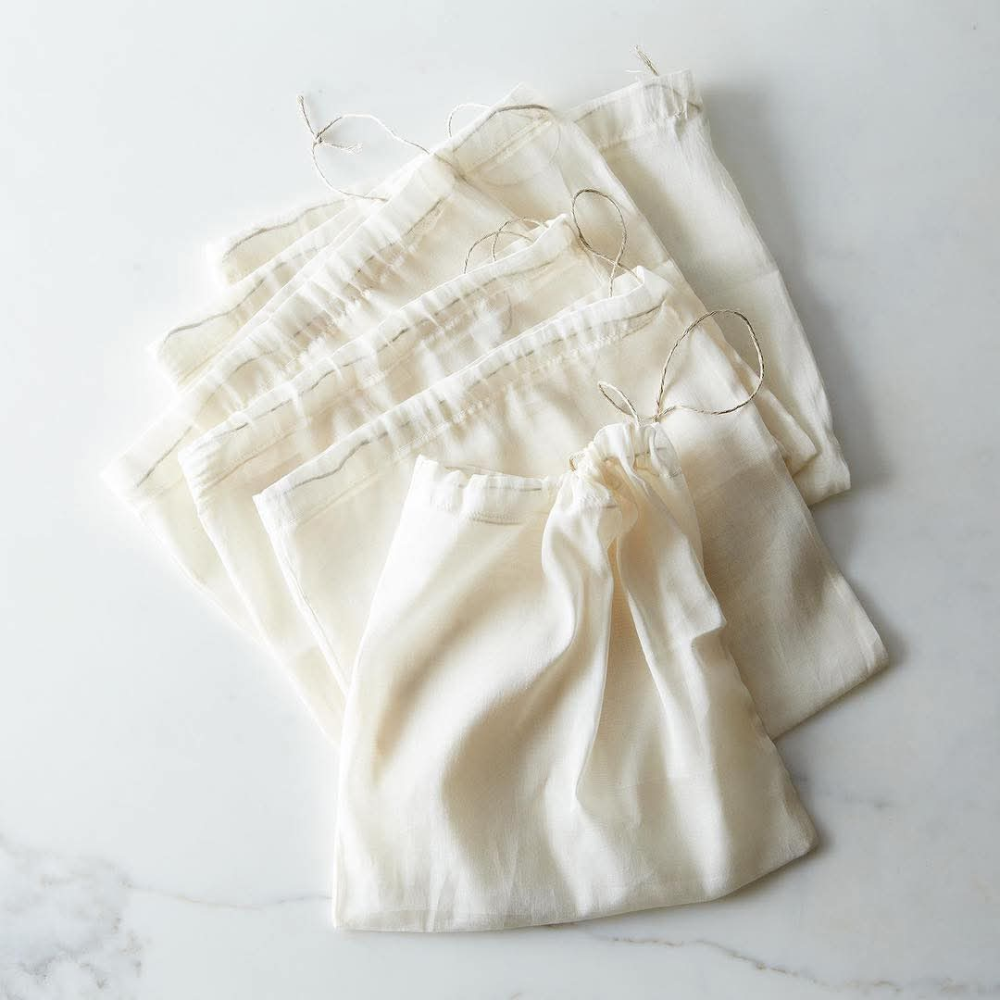

Heritage-Driven Innovation
Vibrant eco-friendly tote bags for the Annual Research Symposium of the Postgraduate Institute of Indigenous Medicine, promoting sustainability in academia.
800+ bags
Real collaborations, measurable impact, custom eco bags for universities, global brands, and conscious communities.
Vibrant eco-friendly tote bags for the Annual Research Symposium of the Postgraduate Institute of Indigenous Medicine, promoting sustainability in academia.

Bold, custom designed eco bags that align with corporate identity, reducing plastic while elevating brand presence.

Eco friendly tote bags, books, and pencils for a landmark HR event, sustainable promotional gifting at scale.

Customized eco tote bags for the Department of Botanical Science blending fashion with environmental responsibility.

Premium non-woven laundry bags for a 5-star eco-resort. Custom options in cotton, canvas, and jute available.

Partnered to produce responsibly manufactured promotional bags, aligning with Nestlé’s sustainability commitments.

Custom jute bags for a university sustainability drive, encouraging reusable alternatives on campus.

Designed and delivered premium eco-friendly tote bags for International Women’s Day in collaboration with Dialog, combining sustainable materials with modern brand identity.